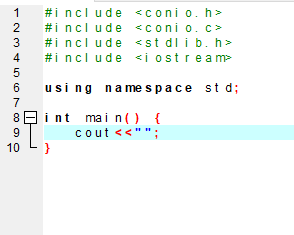
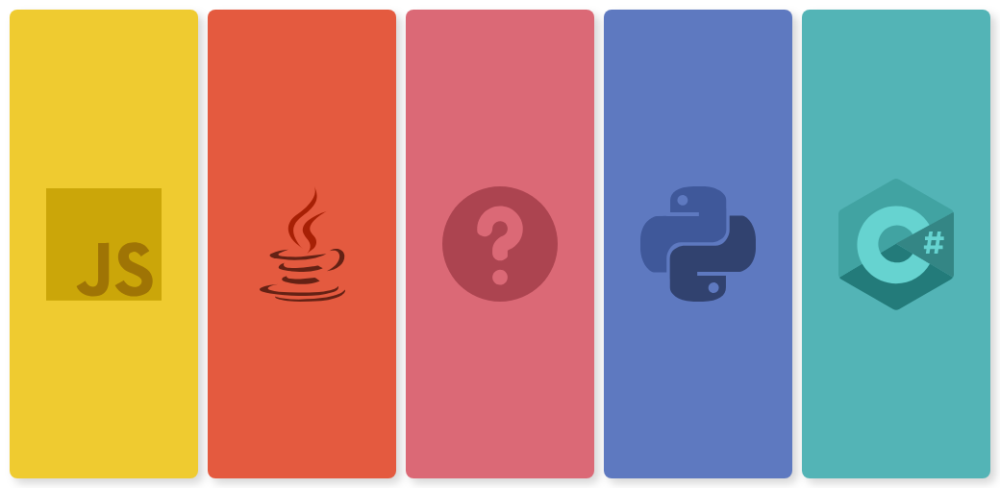
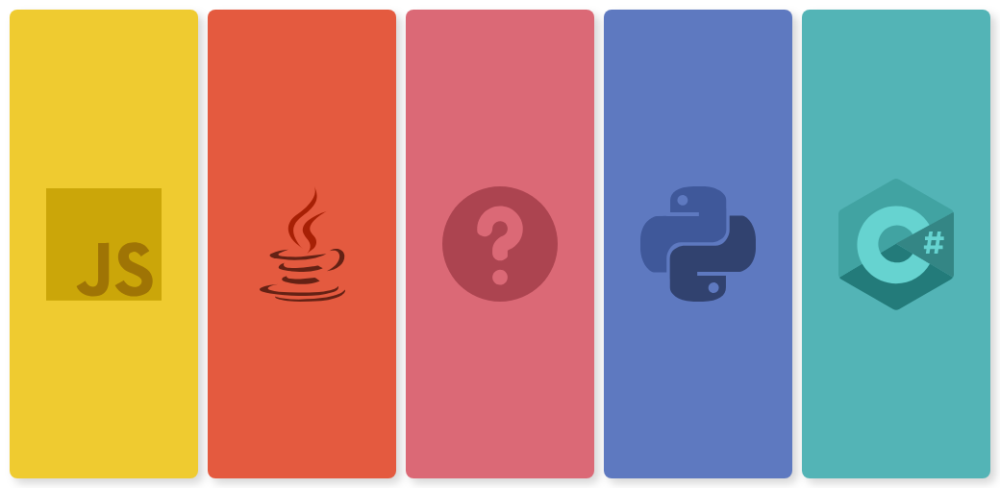

¿Qué es un lenguaje de programación?
Un lenguaje de programación es un sistema estructurado bajo un lenguaje
formal (código) y diseñado principalmente para que las máquinas y
computadoras puedan entender los algoritmos computacionales escritos
por programadores.

Tipos de lenguajes
Lenguaje máquina
Es el más primitivo de los códigos y se basa en la numeración binaria,
todo en 0 y 1. Este lenguaje es utilizado directamente por máquinas o
computadora
Lenguajes de programación de bajo nivel
Es un lenguaje un poco más fácil de interpretar, pero puede variar
de acuerdo a la máquina o computadora que se esté programando.
Lenguajes de programación de alto nivel
En esta categoría se encuentran los más utilizados. Se usan palabras
del inglés lo cual facilita que una persona pueda intervenir más fácil
que en los dos anteriores.

¿Que es un algoritmo?
Un algoritmo es un conjunto finito y ordenado de pasos o
construcciones para obtener la solución de un problema
C++ - Lenguaje de programación
C++ es un lenguaje de programación que proviene de la extensión
del lenguaje C para que pudiese manipular objetos, es un lenguaje
de programación que proviene de la extensión del lenguaje C para
que pudiese manipular objetos

de acuerdo a la máquina o computadora que se esté programando.
Lenguajes de programación de alto nivel
En esta categoría se encuentran los más utilizados. Se usan palabras
del inglés lo cual facilita que una persona pueda intervenir más fácil
que en los dos anteriores.

¿Que es un algoritmo?
Un algoritmo es un conjunto finito y ordenado de pasos o
construcciones para obtener la solución de un problema
C++ - Lenguaje de programación
C++ es un lenguaje de programación que proviene de la extensión
del lenguaje C para que pudiese manipular objetos, es un lenguaje
de programación que proviene de la extensión del lenguaje C para
que pudiese manipular objetos
construcciones para obtener la solución de un problema